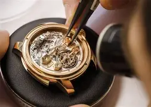

Horloger
Formation
L'apprentissage dure 4 ans. Les Horlogers sont formés à l'EMT et suivent les cours de l'école professionnelle
Et si tu avais la faculté de remonter le temps ?
Ou, au contraire, la possibilité d’être en avance sur ton temps ? L’horlogerie te permet d’entrer dans un univers de rêves et d’opportunités. Un univers d’une rare délicatesse régi par l’esthétisme, l’inventivité, la qualité, la précision et la technique. L’horloger assemble, vérifie et ajuste les multiples pièces qui constituent le mouvement d’une montre. Il en contrôle aussi la qualité aux différents stades de production. Après des années de pratique, tu pourras même révolutionner le coeur d’un garde-temps, en inventant une nouvelle complication, par exemple.